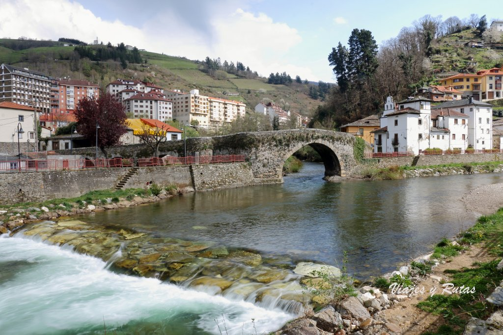
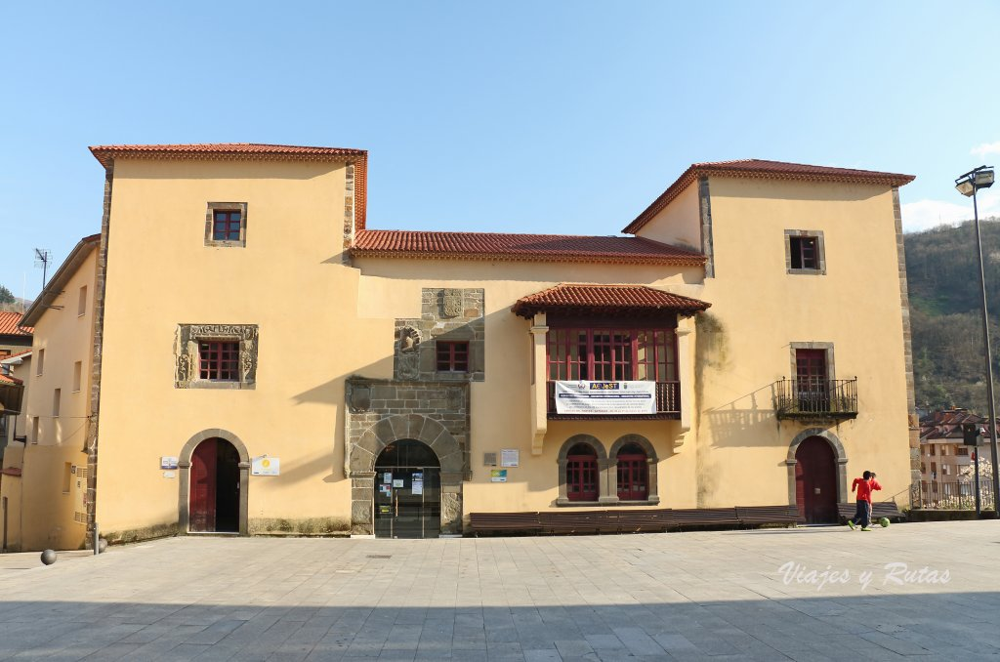
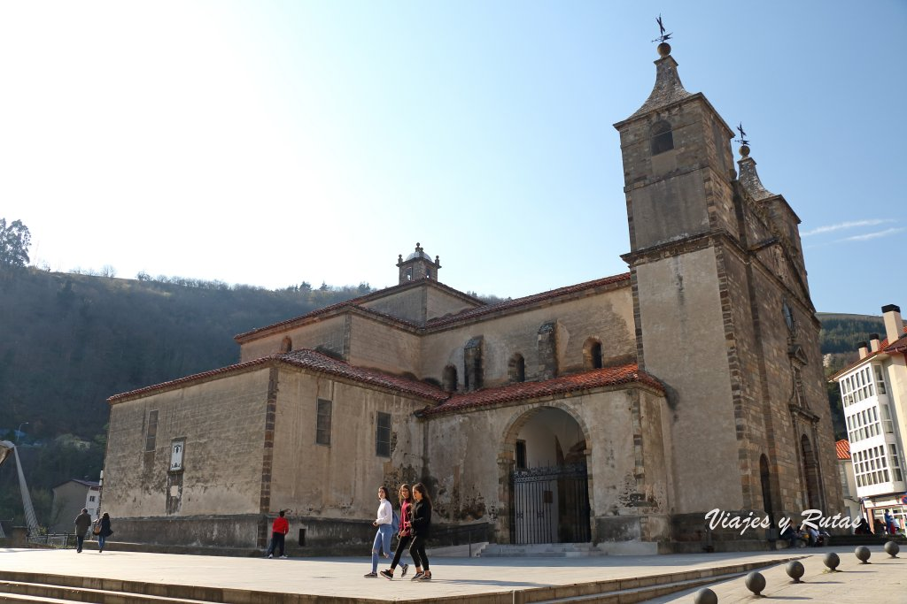
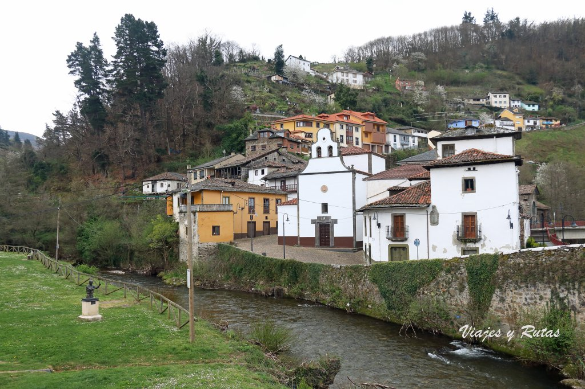
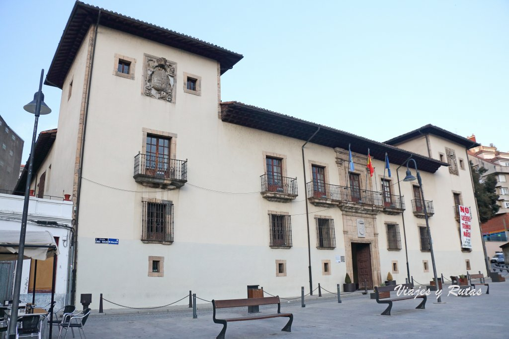

Fundado en 1022 por los condes Piñolo y Aldonza, en 1044 se estableció en él la orden benedictina,
alcanzando su máximo esplendor en los siglos XII y XIII.
En el siglo XVI la iglesia románica fue remplazada por el templo actual siguiendo los planos de un
discípulo de Juan de Herrera, de ahí que el monasterio sea conocido como “El Escorial asturiano”.
En 1773 el monasterio sufrió un grave incendio en el que solo se salvaron la iglesia y la sacristía,
por lo que tuvo que ser reconstruido. Las obras corrieron a cargo del Miguel Ferro Caaveiro, quien
proyectó un edificio de estilo neoclásico.
En 1835, con la desamortización de Mendizábal, los benedictinos abandonaron el lugar, y no fue hasta
1860 cuando fue de nuevo ocupado, en esta ocasión por una comunidad de dominicos.
Desde el 15 de julio de 2013 el Monasterio de Corias es Parador Nacional de Turismo, siendo
inaugurado por la Reina Sofía.
Puente medieval

Puente medieval
Conocido popularmente como “puente romano”, está situado en la confluencia de los ríos Narcea y
Naviego, en el barrio de Entrambasaguas. Por su trazado y tipología se fecha entre los siglos XIII y
XIV.
Palacio de Omaña

Palacio de Omaña
Construido en el siglo XVI y de estilo renacentista, posee dos torres, una a cada uno de los lados de
su cuerpo central en el que sobresale una ventana de estilo plateresco. Adquirido y reformado por el
Ayuntamiento de la localidad, es la Casa de la Cultura, albergando la biblioteca, salas de
exposiciones, la oficina de turismo, etc.
Basílica de Santa María Magdalena

Basílica de Santa María Magdalena
La basílica de la villa, dedicada a la patrona de la misma, es de estilo barroco. Fue construida por
mandato de Fernando de Valdés y Llano (1575-1639), cangués arzobispo de Granada y presidente del
Consejo de Castilla, siguiendo los planos del maestro mayor de la Alhambra de Granada, Bartolomé
Fernández Lechuga. Es monumento Histórico Artístico Nacional desde 1982 y Basílica menor desde 1992.
Capilla del Carmen
Situada en el barrio de Entrambasaguas, fue construida en la primera mitad del siglo XVIII y
costeada por los devotos de la Virgen del Carmen. Destaca su espadaña.

Capilla del Carmen
Palacio de los Condes de Toreno

Palacio de los Conde de Toreno
Sede del Ayuntamiento del concejo de Cangas del Narcea, fue construido en 1701 por el arquitecto
asturiano Juan García de la Barrera. De estilo barroco, es uno de los grandes ejemplos de
arquitectura civil asturiana. Su estructura está formada por cuatro crujías entorno a un patio
central, rodeado por un corredor sustentado por un pórtico de columnas octogonales. Su fachada está
compuesta por un cuerpo central con una balconada y dos torres blasonadas.
Puente colgante
Obra del arquitecto cangués José Gómez del Collado, fue construido en 1970 siguiendo los postulados
de la arquitectura orgánica. Su estructura simula a dos hombres que tensan unos cables que sujetan
el paso peatonal.